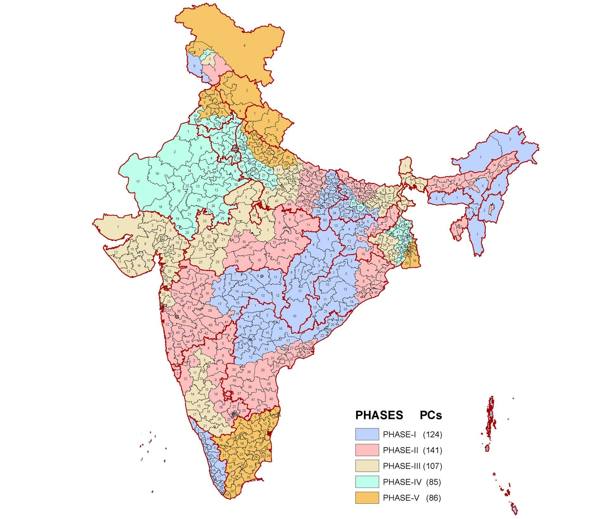

Corruption Laws In India

Public servants in India can be penalized for corruption under
the Indian Penal Code, 1860 and the Prevention of Corruption
Act, 1988. The Benami Transactions (Prohibition) Act, 1988
prohibits benami transactions. The Prevention of Money
Laundering Act, 2002 penalises public servants for the offence
of money laundering. India is also a signatory (not ratified) to
the UN Convention against Corruption since 2005. The Convention
covers a wide range of acts of corruption and also proposes
certain preventive policies.
Anti-Corruption Initiatives (Globally)
There are many regional and global initiatives that have been
taken to prevent Corruption globally and regionally. Some of
them are mentioned below.
Anti-Corruption Initiatives (Regionally)
India’s liberalization that began in the 1980s should have
curtailed corruption, but the opposite happened. Growth surged;
that raised the value of natural resources and government
contracts. So substantial was this increase that despite the
reduction in powers, the economic rent at the government’s
disposal grew strongly.
Let's see what initiatives been taken in India to stop corruption.
Let's see what initiatives been taken in India to stop corruption.
How to file a complaint against the corrupt
In India, you can file corruption complaints with at least three
government - established bodies. Two of these three — the
Central Vigilance Commission and the Central Bureau of
Investigation — work in tandem.